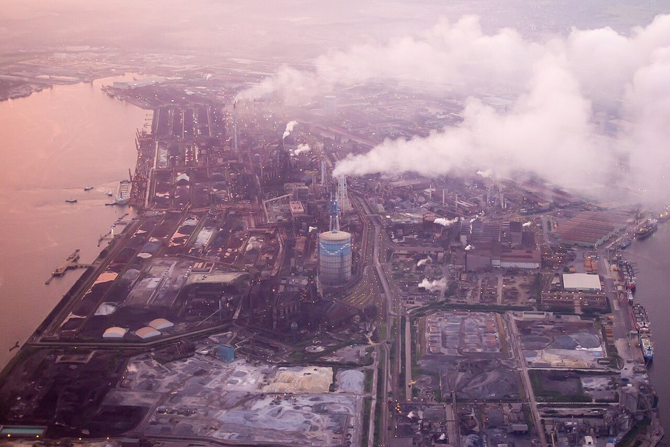
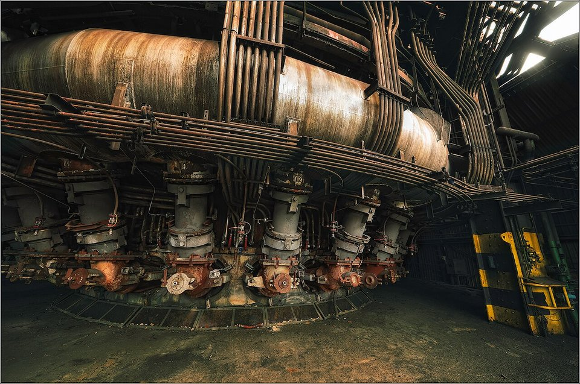
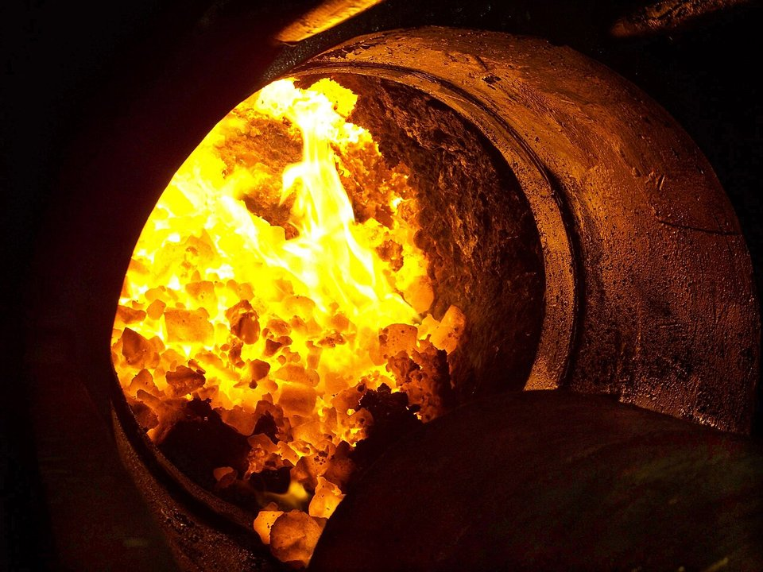

DECARBONIZATION · JAPAN · 2026.10
高爐吹氫減碳 43%：日本製鐵 Super COURSE50 試驗全解析
鋼鐵潮流工作室 · 發布 2026.10.05

本期重點
日本製鐵在君津地區一座只有 12 立方公尺的試驗高爐裡，以「加熱氫氣從風口吹入」的方式，把高爐 CO₂ 減量在不到三年內從 22% 推進到 43%，是目前全球高爐吹氫的最高水準。關鍵在於讓氫氣「自帶熱量」，解決氫還原吸熱導致爐溫下降的難題。但從 12 立方公尺放大到 5,000 立方公尺級實爐，仍有爐況、焦炭、設備與氫氣供應四大關卡。
- 三段成績。 2023 年夏 22%、2023 年底 33%、2024 年底 43%，提前達成開發目標。
- 核心技術。 把氫氣加熱到數百至約 1,000°C 再吹入，維持爐內熱平衡，才能大幅提高氫的取代比例。
- 下一步。 150 m³ 中型試驗爐驗證，2030 年前規劃實爐示範，2040 年前後目標在大型高爐減碳 50% 以上。
- 看懂數字。 43% 只算高爐本身，不等於全廠減碳，也未計入製氫排放。
關鍵數字
試驗高爐12 m³君津地區，約實爐的 1/400～1/500
還原劑加熱氫氣外部供氫，從風口吹入
氫氣溫度數百～約 1,000°C補償氫還原吸熱
最佳成績高爐 CO₂ 減 43%2024 年 11–12 月，全球首度破 40%
放大挑戰約 400 倍實爐內容積約 5,000 m³
實用化2040 年前後大型高爐減碳 50% 以上
高爐裡發生什麼事
高爐剖面示意（本刊繪製，比例非實際）
- 風口與回旋區。 高爐下部一圈風口吹入約 1,200°C 的熱風，焦炭在風口前燃燒，形成溫度 2,000°C 以上的「回旋區」，產生一氧化碳與熱量。
- 爐身：間接還原。 一氧化碳往上流，在爐身與下降的鐵礦砂反應、奪走氧，產生二氧化碳。
- 軟熔帶與爐缸。 礦石逐漸軟化熔融，滴落到爐缸成為鐵水；焦炭是料柱中唯一不熔化的固體，撐起讓氣體通過的「骨架」。
| 碳還原 | 氫還原 | |
|---|---|---|
| 反應 | Fe₂O₃ + 3CO → 2Fe + 3CO₂ | Fe₂O₃ + 3H₂ → 2Fe + 3H₂O |
| 產物 | 二氧化碳 | 水 |
| 熱效應 | 放熱 | 吸熱 |
| 其他特性 | 焦炭兼具熱源、骨架與滲碳功能 | 氫分子小、擴散快，還原速度快 |
試驗要解決的難題

- 吸熱讓爐溫下降。 氫氣越多，爐身吸熱越多，溫度掉落會讓還原變慢、爐況失控。
- 焦炭減少，熱源也減少。 氫氣取代部分焦炭後，風口前燃燒放出的熱跟著減少。
- 冷氣體拉低火焰溫度。 直接吹入常溫氫氣會壓低回旋區溫度，影響爐缸熱量與鐵水溫度。
Super COURSE50 的解法：把氫氣本身加熱到數百至約 1,000°C 再從風口吹入，讓氫氣攜帶顯熱進爐，補償吸熱與焦炭減少造成的熱損失。日本製鐵在 43% 的公告中指出，突破關鍵正是「改善爐內熱平衡，使更多氫氣得以取代」。
試驗歷程
| 項目 | COURSE50（2008–2022） | Super COURSE50（2022–） |
|---|---|---|
| 氫氣來源 | 廠內焦爐煤氣（含氫約 60%） | 外部供應的氫氣 |
| 做法 | 吹入焦爐煤氣，並以化學吸收法回收高爐煤氣中的 CO₂ | 加熱氫氣從風口吹入，維持熱平衡 |
| 成果 | 氫還原減碳逾 10% | 22% → 33% → 43% |
| 目標 | 結合碳捕捉，減碳 30% 以上 | 大型高爐減碳 50% 以上 |
試驗由日本製鐵主導，與 JFE、神戶製鋼及金屬系材料研究開發中心組成「水素製鐵聯盟」，由日本新能源產業技術綜合開發機構（NEDO）綠色創新基金資助。試驗高爐內容積 12 立方公尺，搭配自主開發的三維數學模型，先在小爐驗證反應，再推估放大效果。
43% 代表什麼，不代表什麼
以下為本刊解讀，非日本製鐵說明。
- 只算高爐。 一貫作業鋼廠還有燒結、焦爐、轉爐與自備電廠的排放；高爐減 43% 換算成全廠，比例會低得多。焦炭用量下降可連帶減少焦爐排放，但燒結等工序不受影響。
- 未計入製氫。 若使用天然氣製造的灰氫，排放只是轉移到製氫端；必須是綠氫才是真正減碳。
- 基準未完整公開。 公告以傳統高爐操作為比較基準，但詳細計算邊界未完整揭露，跨公司比較時須留意。
放大到實爐的四大關卡

以下依一般高爐工程常識整理。
- 放大約 400 倍。 爐徑變大後，風口氣體往爐心的穿透深度、溫度分布與料柱下降都會改變，小爐成績無法直接套用。
- 焦炭骨架變弱。 焦比下降考驗料柱透氣性與爐況穩定；氫還原產生的水蒸氣也可能與焦炭反應，加速焦炭劣化。
- 加熱氫氣的設備與安全。 大量把氫氣加熱到約 1,000°C，加熱設備、管線材料（氫脆）與防爆設計都是全新工程課題。
- 氫氣供應量與成本。 大型高爐要取代 40–50% 的碳，氫氣需求極大；日本本土缺乏低價綠氫，是商業化最大障礙。
接下來的時程
| 階段 | 內容 |
|---|---|
| 中型試驗爐 | 依 NEDO 成果報告，水素製鐵聯盟於 JFE 東日本製鐵所千葉地區建造 150 m³ 小型高爐，預定 2025–2026 年試驗 |
| 實爐示範 | NEDO 報告提及 2030 年前於 5,000 m³ 級實爐進行示範試驗 |
| 實用化 | 目標 2040 年前後於大型高爐確立減碳 50% 以上的技術 |
Super COURSE50 是日本製鐵「碳中和願景 2050」三大路線之一，另兩條是氫氣直接還原與大型電爐生產高級鋼；電爐路線已拍板在八幡、廣畑、山口合計投資 8,700 億日圓、新增 290 萬噸產能，2028–2029 年陸續投產。
對中鋼的參考
- 條件相近。 中鋼與日本製鐵同樣以高爐為主、擁有焦爐煤氣、缺乏低價天然氣與綠氫，日本「高爐減碳＋電爐高級鋼」的雙軌模式，比歐洲全面轉向氫冶金更具參考性。
- 可先行評估的方向。 以本刊判斷，COURSE50 式「吹入自家焦爐煤氣」投資門檻較低；Super COURSE50 需大量外購氫氣，有待氫能供應與成本條件成熟。
資料來源
- Super COURSE50 試驗爐 22% 減量（日本製鐵，2023-08-04）
- Super COURSE50 試驗爐 33% 減量（日本製鐵，2024-02-06）
- World's First 43% Reduction in CO₂ Emissions in a Test Furnace（Pollution Online，2024-12-20）
- NEDO 脱炭素技術分野成果報告会 2025：水素製鉄コンソーシアム（NEDO）
- Development of CO₂ emission reduction technology using hydrogen in blast furnace steelmaking（Challenge Zero）
- Breakthrough Technology Development to Decarbonize Steelmaking Processes（日本製鐵）
- 日本製鉄の水素還元製鉄技術 Super COURSE50 とは何か
- Japan's Nippon Steel finalises $6bn EAF investment（Argus，2025-05-30）
- 水素製鉄は50年前から始まっていた（GEPR，2026-08-17）
內容僅供產業資訊參考，不構成投資建議。新聞版權屬原出處所有。